Code
pacman::p_load(ggrepel, ggthemes, hrbrthemes, patchwork, tidyverse, haven, gridExtra, ggplot2, plotly, ggridges)This take-home exercise is done based on a take-home exercise 1 submission prepared by a classmate. The peer submission will be critiqued in terms of clarity and aesthetics, and the original design will be remade using the data visualization principles and best practice learnt in Lesson 1 and 2.
The code chunk below uses pacman::p_load() to check if packages are installed. If they are, they will be launched into R. The packages installed are
ggrepel: an R package provides geoms for ggplot2 to repel overlapping text labels.
ggthemes: an R package provides some extra themes, geoms, and scales for ‘ggplot2’.
hrbrthemes: an R package provides typography-centric themes and theme components for ggplot2.
patchwork: an R package for preparing composite figure created using ggplot2.
haven: an R package designed for reading and writing datasets from software like SAS, SPSS, and Stata, into R.
gridExtra: an R package that extends the grid graphics system.
ggplot2: a widely used R package for creating elegant and informative graphics using the Grammar of Graphics framework.
plotly: an R package for interactive, web-based charts and dashboards, extending ggplot2 capabilities.
ggridges: an R package extending ggplot2 for concise and effective ridge plots.
pacman::p_load(ggrepel, ggthemes, hrbrthemes, patchwork, tidyverse, haven, gridExtra, ggplot2, plotly, ggridges)One dataset (Student questionnaire data file) from PISA is provided for the task.
stu_qqq_SG <- read_rds("/Users/zhangshujie/Desktop/SMU/Term 2/Visual/suzyzsj/ISSS608-VAA/In-class_Ex/In-class_Ex01/data/stu_qqq_SG.rds")Following this student’s approach, select the variables related to the project and name them.
| Variable Code | Variable Name |
|---|---|
| CNTSCHID | School_ID |
| CNTSTUID | Student_ID |
| ST004D01T | Gender |
| PV1MATH | Math_Score |
| PV1READ | Reading_Score |
| PV1SCIE | Science_Score |
| ESCS | Socioeconomic_Stat |
| ST251Q07JA | Artwork |
stu_qqq_eda <- stu_qqq_SG %>%
select(CNTSCHID,CNTSTUID,ST004D01T, PV1MATH, PV1READ, PV1SCIE, ST250Q01JA, ST250Q03JA, ST251Q07JA, ESCS)%>%
rename(c(Gender="ST004D01T",
School_ID="CNTSCHID",
Student_ID="CNTSTUID",
Math_Score="PV1MATH",
Reading_Score="PV1READ",
Science_Score="PV1SCIE",
Own_Room="ST250Q01JA",
Edu_App="ST250Q03JA",
Artwork="ST251Q07JA",
Socioeconomic_Stat="ESCS"))Changing Data Types
stu_qqq_eda$School_ID = as.factor(stu_qqq_eda$School_ID)
stu_qqq_eda$Gender = as.factor(stu_qqq_eda$Gender)Recode Variables
stu_qqq_eda <- stu_qqq_eda %>%
mutate(Gender=(recode(Gender, '1'="Female", '2'="Male")))stu_qqq_eda$Artwork <- factor(stu_qqq_eda$Artwork,
levels = c(1,2,3,4),
labels = c("None","One","Two","Three+"))
stu_data_artwork <- stu_qqq_eda[!is.na(stu_qqq_eda$Artwork), ]stu_qqq_socio <- stu_qqq_eda %>%
select(Math_Score, Science_Score, Reading_Score, Socioeconomic_Stat) %>%
drop_na()ggplot(data=stu_qqq_eda,
aes(x=Math_Score)) +
geom_histogram(color= "grey10",
fill= '#ADD0B3') +
labs(x = "Math Scores",
y ="Number of Students",
title= "Distribution of Student Math Scores") +
geom_vline(aes(xintercept=median(stu_qqq_eda$Math_Score, na.rm = T)),
color="#FFFFFF",
linewidth=1,
linetype="dashed") +
annotate("text",
x=675,
y=60,
label= paste("Median =", round(median(stu_qqq_eda$Math_Score, na.rm = T), 3)),
color= "white",
size=4,
) +
geom_vline(aes(xintercept=mean(stu_qqq_eda$Math_Score, na.rm = T)),
colour="black",
linewidth=1,
linetype="dashed") +
annotate("text",
x=495,
y=50,
label=paste("Mean =", round(mean(stu_qqq_eda$Math_Score, na.rm = T), 3)),
color="black",
size=4) +
theme(plot.background=element_rect(fill="#f5f5f5",colour="#f5f5f5"))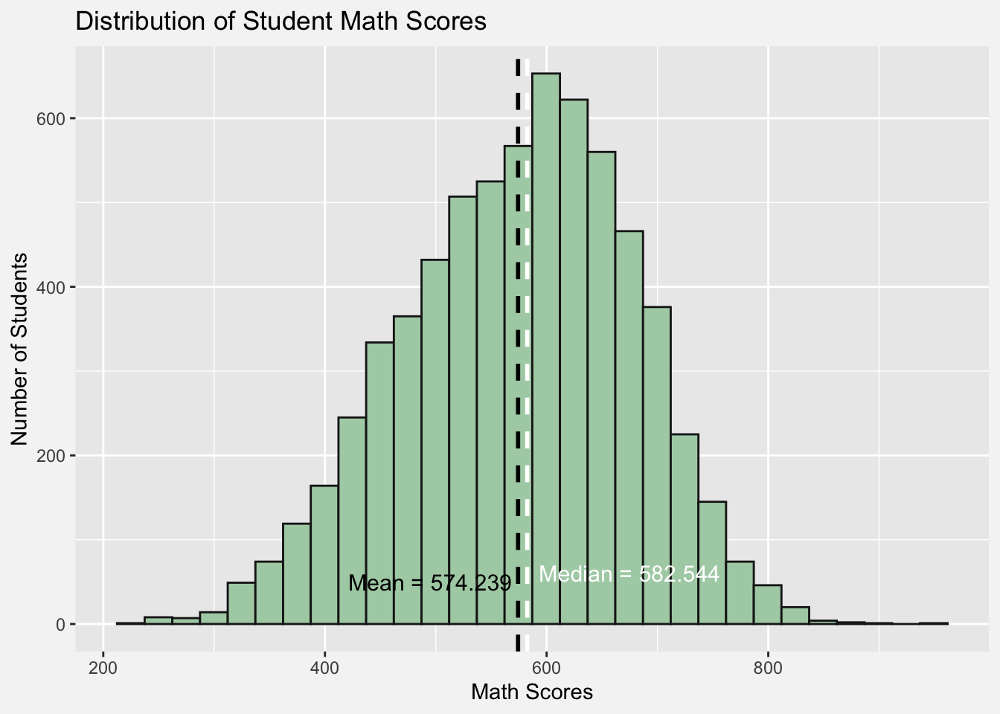
ggplot(data=stu_qqq_eda,
aes(x=Reading_Score)) +
geom_histogram(color= "grey10",
fill= '#ADD0B3') +
labs(x= "Reading Scores",
y="Number of Students",
title= "Distribution of Student Reading Scores") +
geom_vline(aes(xintercept=median(stu_qqq_eda$Reading_Score, na.rm = T)),
color="#FFFFFF",
linewidth=1,
linetype="dashed") +
annotate("text",
x=650,
y=60,
label= paste("Median =", round(median(stu_qqq_eda$Reading_Score, na.rm = T), 3)),
color= "#FFFFFF",
size=4) +
geom_vline(aes(xintercept=mean(stu_qqq_eda$Reading_Score, na.rm = T)),
colour="black",
linewidth=1,
linetype="dashed") +
annotate("text",
x=460,
y=50,
label=paste("Mean =", round(mean(stu_qqq_eda$Reading_Score, na.rm = T), 3)),
color="black",
size=4) +
theme(plot.background=element_rect(fill="#f5f5f5",colour="#f5f5f5"))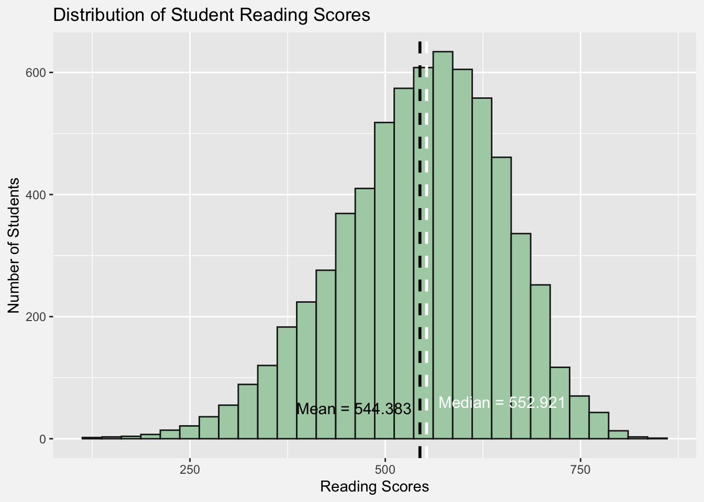
ggplot(data=stu_qqq_eda,
aes(x=Science_Score)) +
geom_histogram(color= "grey10",
fill= '#ADD0B3') +
labs(x= "Science Scores",
y="Number of Students",
title= "Distribution of Student Science Scores") +
geom_vline(aes(xintercept=median(stu_qqq_eda$Science_Score, na.rm = T)),
color="#FFFFFF",
linewidth=1,
linetype="dashed") +
annotate("text",
x=659,
y=60,
label= paste("Median =", round(median(stu_qqq_eda$Science_Score, na.rm = T), 3)),
color= "#FFFFFF",
size=4) +
geom_vline(aes(xintercept=mean(stu_qqq_eda$Science_Score, na.rm = T)),
colour="black",
linewidth=1,
linetype="dashed") +
annotate("text",
x=480,
y=50,
label=paste("Mean =", round(mean(stu_qqq_eda$Science_Score, na.rm = T), 3)),
color="black",
size=4) +
theme(plot.background=element_rect(fill="#f5f5f5",colour="#f5f5f5"))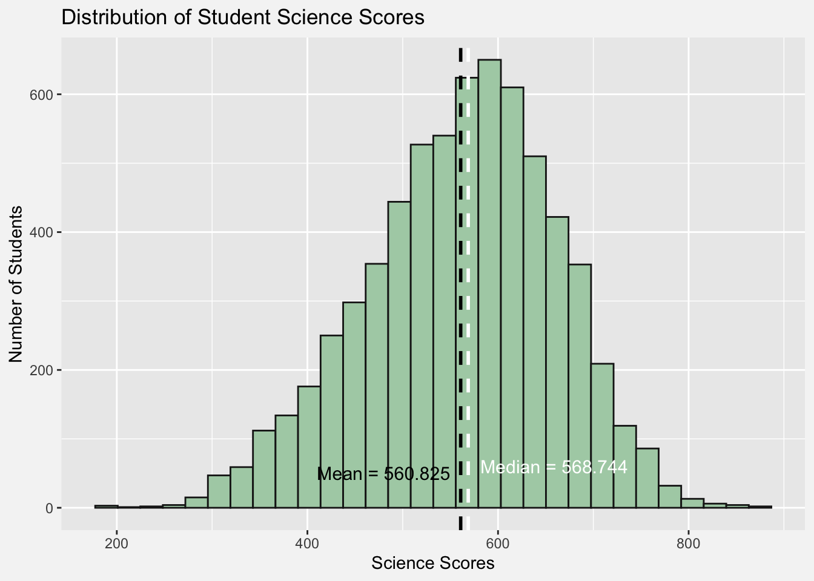
Lack of intuitive display of data dispersion: Histograms can show the pattern of data distribution, but they do not display the spread of data as intuitively as box plots, including quartiles and outliers.
Lack of space efficiency: A single chart may visually occupy more space because it requires additional charts to provide the information that a box plot can offer.
median_math <- round(median(stu_qqq_eda$Math_Score, na.rm = TRUE), 0)
mean_math <- round(mean(stu_qqq_eda$Math_Score, na.rm = TRUE), 0)
min_math <- round(min(stu_qqq_eda$Math_Score, na.rm = TRUE), 0)
max_math <- round(max(stu_qqq_eda$Math_Score, na.rm = TRUE), 0)
# histogram
histogram <- ggplot(stu_qqq_eda, aes(x=Math_Score)) +
geom_histogram(color="grey10", fill='#ADD0B3', bins=30) +
geom_vline(aes(xintercept=median_math), color="#FFFFFF", linewidth=1, linetype="dashed") +
annotate("text", x=675, y=600, label=paste("Median =", median_math), color="black", size=4) +
geom_vline(aes(xintercept=mean_math), colour="black", linewidth=1, linetype="dashed") +
annotate("text", x=495, y=600, label=paste("Mean =", mean_math), color="black", size=4) +
labs(x = "Math Scores", y ="Number of Students", title= "Distribution of Student Math Scores") +
theme_minimal() +
theme(plot.background=element_rect(fill="#f5f5f5", colour="#f5f5f5"))
# boxplot
boxplot <- ggplot(stu_qqq_eda, aes(y=Math_Score, x="")) +
geom_boxplot(fill='#ADD0B3') +
stat_summary(fun=mean, geom="point", shape=23, size=2, color="darkred", fill="red") +
geom_text(x=0.5, y=min_math, label=min_math, vjust=-0.5) +
geom_text(x=0.5, y=max_math, label=max_math, vjust=-0.5) +
coord_flip() +
labs(title="Boxplot of Math Scores", x="", y="") +
theme_minimal() +
theme(plot.background=element_rect(fill="#f5f5f5", colour="#f5f5f5"),
axis.text.x=element_blank(),
axis.ticks.x=element_blank())
# combined plot
combined_plot <- boxplot + histogram + plot_layout(heights = c(1, 3))
combined_plot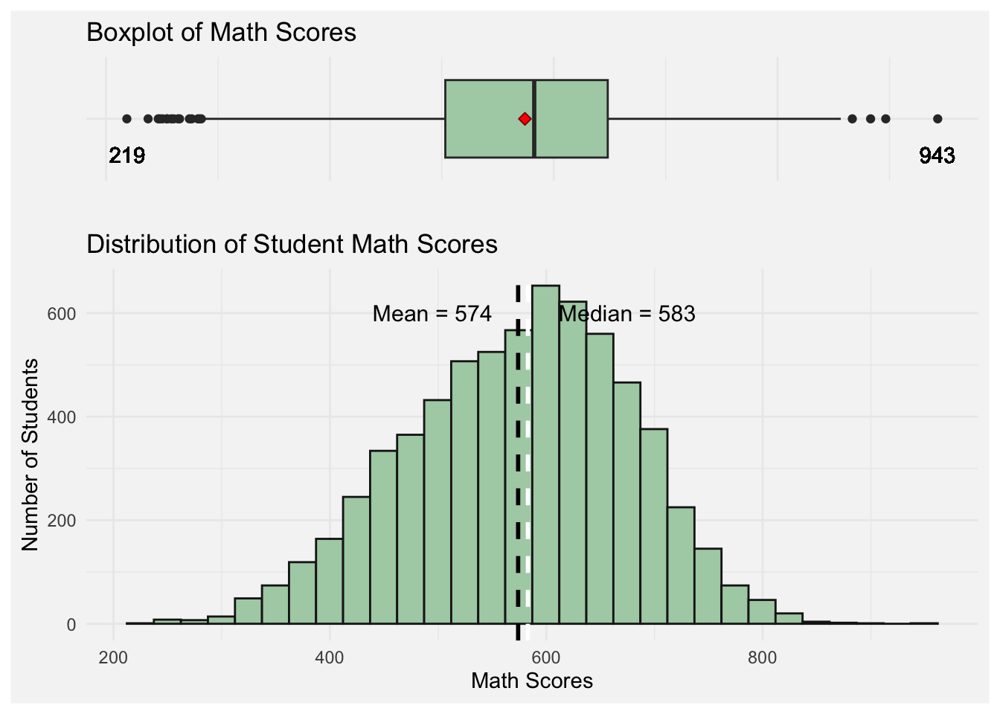
median_reading <- round(median(stu_qqq_eda$Reading_Score, na.rm = TRUE), 0)
mean_reading <- round(mean(stu_qqq_eda$Reading_Score, na.rm = TRUE), 0)
min_reading <- round(min(stu_qqq_eda$Reading_Score, na.rm = TRUE), 0)
max_reading <- round(max(stu_qqq_eda$Reading_Score, na.rm = TRUE), 0)
histogram_reading <- ggplot(stu_qqq_eda, aes(x=Reading_Score)) +
geom_histogram(color="grey10", fill='#ADD0B3', bins=30) +
geom_vline(aes(xintercept=median_reading), color="#FFFFFF", linewidth=1, linetype="dashed") +
annotate("text", x=650, y=600, label=paste("Median =", median_reading), color="black", size=4) +
geom_vline(aes(xintercept=mean_reading), colour="black", linewidth=1, linetype="dashed") +
annotate("text", x=460, y=600, label=paste("Mean =", mean_reading), color="black", size=4) +
labs(x= "Reading Scores", y="Number of Students", title= "Distribution of Student Reading Scores") +
theme_minimal() +
theme(plot.background=element_rect(fill="#f5f5f5", colour="#f5f5f5"))
boxplot_reading <- ggplot(stu_qqq_eda, aes(y=Reading_Score, x="")) +
geom_boxplot(fill='#ADD0B3') +
stat_summary(fun=mean, geom="point", shape=23, size=2, color="darkred", fill="red") +
geom_text(x=0.5, y=min_reading, label=min_reading, vjust=-0.5) +
geom_text(x=0.5, y=max_reading, label=max_reading, vjust=-0.5) +
coord_flip() +
labs(title="Boxplot of Reading Scores", x="", y="") +
theme_minimal() +
theme(plot.background=element_rect(fill="#f5f5f5", colour="#f5f5f5"),
axis.text.x=element_blank(),
axis.ticks.x=element_blank())
combined_plot_reading <- boxplot_reading + histogram_reading + plot_layout(heights = c(1, 3))
combined_plot_reading
median_science <- round(median(stu_qqq_eda$Science_Score, na.rm = TRUE), 0)
mean_science <- round(mean(stu_qqq_eda$Science_Score, na.rm = TRUE), 0)
min_science <- round(min(stu_qqq_eda$Science_Score, na.rm = TRUE), 0)
max_science <- round(max(stu_qqq_eda$Science_Score, na.rm = TRUE), 0)
histogram_science <- ggplot(stu_qqq_eda, aes(x=Science_Score)) +
geom_histogram(color="grey10", fill='#ADD0B3', bins=30) +
geom_vline(aes(xintercept=median_science), color="#FFFFFF", linewidth=1, linetype="dashed") +
annotate("text", x=659, y=600, label=paste("Median =", median_science), color="black", size=4) +
geom_vline(aes(xintercept=mean_science), colour="black", linewidth=1, linetype="dashed") +
annotate("text", x=480, y=600, label=paste("Mean =", mean_science), color="black", size=4) +
labs(x= "Science Scores", y="Number of Students", title= "Distribution of Student Science Scores") +
theme_minimal() +
theme(plot.background=element_rect(fill="#f5f5f5", colour="#f5f5f5"))
boxplot_science <- ggplot(stu_qqq_eda, aes(y=Science_Score, x="")) +
geom_boxplot(fill='#ADD0B3') +
stat_summary(fun=mean, geom="point", shape=23, size=2, color="darkred", fill="red") +
geom_text(x=0.5, y=min_science, label=min_science, vjust=-0.5) +
geom_text(x=0.5, y=max_science, label=max_science, vjust=-0.5) +
coord_flip() +
labs(title="Boxplot of Science Scores", x="", y="") +
theme_minimal() +
theme(plot.background=element_rect(fill="#f5f5f5", colour="#f5f5f5"),
axis.text.x=element_blank(),
axis.ticks.x=element_blank())
combined_plot_science <- boxplot_science + histogram_science + plot_layout(heights = c(1, 3))
combined_plot_science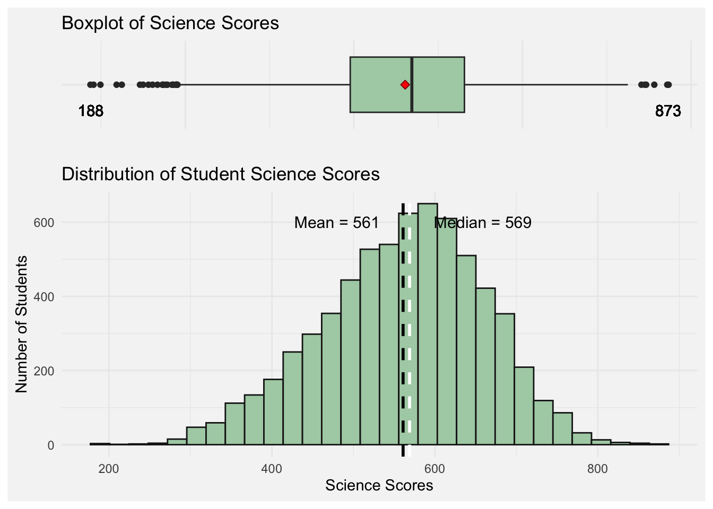
The combination of histograms and box plots: By using the plot_layout() function, histograms and box plots are combined together, allowing both types of charts to be viewed within the same visualization, facilitating comparison and analysis.
The use of the theme_minimal() theme: This unifies the aesthetic style of the charts, making them more streamlined and modern.
Adjustment of annotations and indicator lines: Through the use of annotate() and geom_vline(), dashed lines and text annotations representing the mean and median have been added to the histogram, making these key statistical indicators immediately clear.
Optimization of chart layout and proportions: The relative height proportions of the histograms and box plots have been adjusted using the plot_layout() to ensure visual coherence.
The below code chunk begins by grouping the data based on the unique school IDs. Then, it calculates the average scores for each subject, creating new variables. Only distinct combinations of school IDs and their corresponding average scores for each subject are included.
stu_sch <- stu_qqq_eda %>%
group_by(School_ID) %>%
mutate(math_avg = mean(Math_Score),
science_avg = mean(Science_Score),
reading_avg = mean(Reading_Score)) %>%
select(School_ID, math_avg, science_avg, reading_avg) %>%
unique() Below shows the histograms of the different average scores for each subject across different schools. The histogram is customized with 30 bins, with a customized color scheme, and median labels and values. This provides a comprehensive view of how average scores vary within schools for each subject.
sch_math <- ggplot(data = stu_sch,
aes(x = math_avg)) +
geom_histogram(bins=30,
color = "grey50",
fill = "#ADD0B3") +
geom_vline(
aes(xintercept = median(math_avg)),
colour="black",
linewidth = 0.8,
linetype = "dashed"
) +
annotate(
geom = "text",
x = 700,
y = 25,
label = paste("Median =", round(median(stu_sch$math_avg), 3)),
color = "black"
) +
ylim(0, 30) +
xlim(300,900) +
labs(x = "Average Scores", y = "Count", title = "Mathematics")
sch_math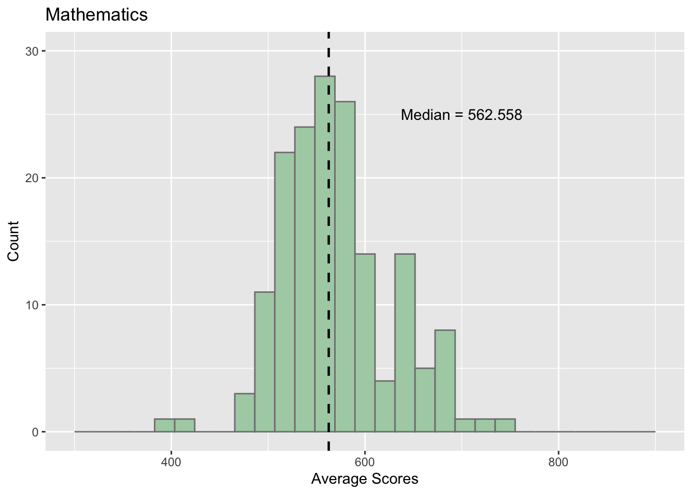
median_reading <- round(median(stu_qqq_eda$Reading_Score, na.rm = TRUE), 0)
mean_reading <- round(mean(stu_qqq_eda$Reading_Score, na.rm = TRUE), 0)
min_reading <- round(min(stu_qqq_eda$Reading_Score, na.rm = TRUE), 0)
max_reading <- round(max(stu_qqq_eda$Reading_Score, na.rm = TRUE), 0)
histogram_reading <- ggplot(stu_qqq_eda, aes(x=Reading_Score)) +
geom_histogram(color="grey10", fill='#ADD0B3', bins=30) +
geom_vline(aes(xintercept=median_reading), color="#FFFFFF", linewidth=1, linetype="dashed") +
annotate("text", x=650, y=600, label=paste("Median =", median_reading), color="black", size=4) +
geom_vline(aes(xintercept=mean_reading), colour="black", linewidth=1, linetype="dashed") +
annotate("text", x=460, y=600, label=paste("Mean =", mean_reading), color="black", size=4) +
labs(x= "Reading Scores", y="Number of Students", title= "Distribution of Student Reading Scores") +
theme_minimal() +
theme(plot.background=element_rect(fill="#f5f5f5", colour="#f5f5f5"))
boxplot_reading <- ggplot(stu_qqq_eda, aes(y=Reading_Score, x="")) +
geom_boxplot(fill='#ADD0B3') +
stat_summary(fun=mean, geom="point", shape=23, size=2, color="darkred", fill="red") +
geom_text(x=0.5, y=min_reading, label=min_reading, vjust=-0.5) +
geom_text(x=0.5, y=max_reading, label=max_reading, vjust=-0.5) +
coord_flip() +
labs(title="Boxplot of Reading Scores", x="", y="") +
theme_minimal() +
theme(plot.background=element_rect(fill="#f5f5f5", colour="#f5f5f5"),
axis.text.x=element_blank(),
axis.ticks.x=element_blank())
combined_plot_reading <- boxplot_reading + histogram_reading + plot_layout(heights = c(1, 3))
combined_plot_reading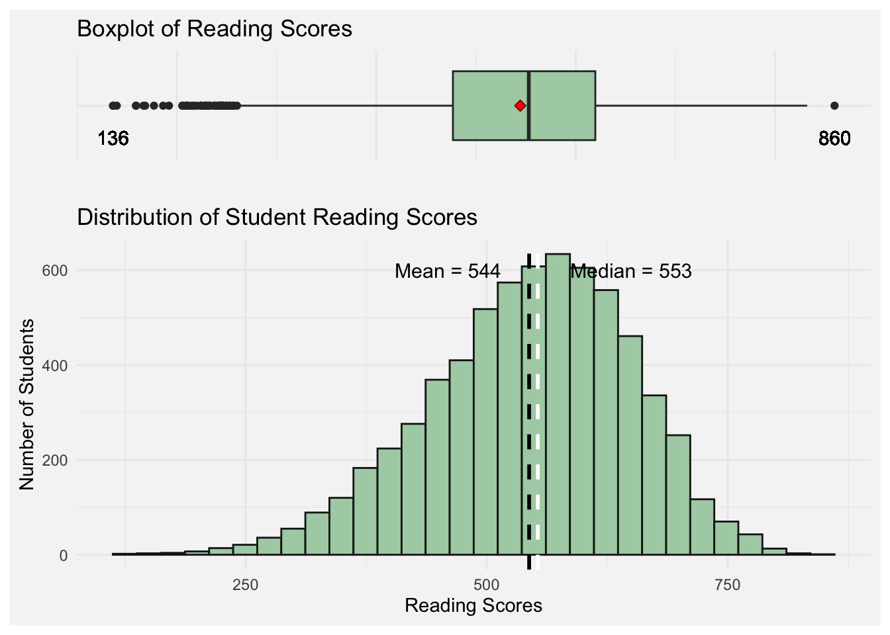
sch_sci <- ggplot(data = stu_sch,
aes(x = science_avg)) +
geom_histogram(bins=30,
color = "grey50",
fill = "#ADD0B3") +
geom_vline(
aes(xintercept = median(science_avg)),
colour="black",
linewidth = 0.7,
linetype = "dashed"
) +
annotate(
geom = "text",
x = 700,
y = 25,
label = paste("Median =", round(median(stu_sch$science_avg), 3)),
color = "black"
) +
ylim(0, 35) +
xlim(300,900) +
labs(x = "Average Scores", y = "Count", title = "Science")
sch_sci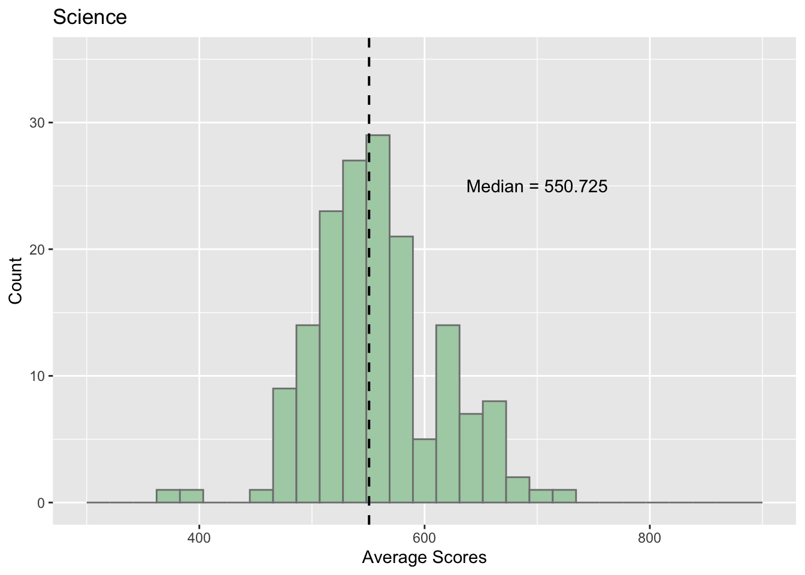
sch_math <- ggplot(data=stu_sch,
aes(y = math_avg)) +
geom_boxplot(width=0.1, outlier.colour = "#137a63") +
stat_summary(aes(x = 0),
geom = "point",
fun.y = "mean",
shape = 18,
colour = "#ADD0B3",
size = 3.5) +
xlim(c(-.1,.1))+
scale_x_continuous(NULL, breaks = NULL) +
labs(y = "Math Average", title = "")
sch_read <- ggplot(data=stu_sch,
aes(y = reading_avg)) +
geom_boxplot(width=0.1, outlier.colour = "#137a63") +
stat_summary(aes(x = 0),
geom = "point",
fun.y = "mean",
shape = 18,
colour = "#ADD0B3",
size = 3.5) +
xlim(c(-.1,.1))+
scale_x_continuous(NULL, breaks = NULL) +
labs(y = "Reading Average", title = "")
sch_sci <- ggplot(data=stu_sch,
aes(y = science_avg)) +
geom_boxplot(width=0.1, outlier.colour = "#137a63") +
stat_summary(aes(x = 0),
geom = "point",
fun.y = "mean",
shape = 18,
colour = "#ADD0B3",
size = 3.5) +
xlim(c(-.1,.1)) +
scale_x_continuous(NULL, breaks = NULL) +
labs(y = "Science Average", title = "")
sch_math + sch_read + sch_sci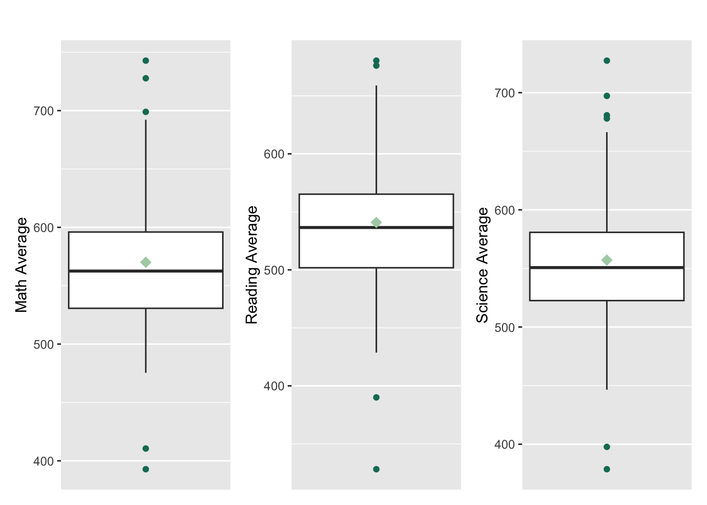
Clarity:
Lack of integrated comparison, making it difficult to perform quick and direct comparisons between subjects.
Insufficient integration of information, with independent charts leading to dispersed information, requiring the audience to shift their attention between different charts to gain a comprehensive understanding.
Unclear identification: The box plots do not provide specific identifiers (such as School ID) like the scatter plot, which makes it less convenient to identify specific data points (such as particularly high or low school average scores).
Aesthetics：
# Scatter plot for Avg Math Score vs School ID
p1 <- ggplot(stu_sch, aes(x = School_ID, y = math_avg)) +
geom_point(aes(color = School_ID), alpha = 0.6) +
ggtitle("Scatter Plot of Avg Math Scores by School ID") +
xlab("School ID") +
ylab("Average Math Score") +
theme_minimal() +
theme(legend.position = "none")
# Scatter plot for Avg Reading Score vs School ID
p2 <- ggplot(stu_sch, aes(x = School_ID, y = reading_avg)) +
geom_point(aes(color = School_ID), alpha = 0.6) +
ggtitle("Scatter Plot of Avg Reading Scores by School ID") +
xlab("School ID") +
ylab("Average Reading Score") +
theme_minimal() +
theme(legend.position = "none")
# Scatter plot for Avg Science Score vs School ID
p3 <- ggplot(stu_sch, aes(x = School_ID, y = science_avg)) +
geom_point(aes(color = School_ID), alpha = 0.6) +
ggtitle("Scatter Plot of Avg Science Scores by School ID") +
xlab("School ID") +
ylab("Average Science Score") +
theme_minimal() +
theme(legend.position = "none")
# Plotting all three scatter plots in a grid for comparison
grid.arrange(p1, p2, p3, ncol = 1)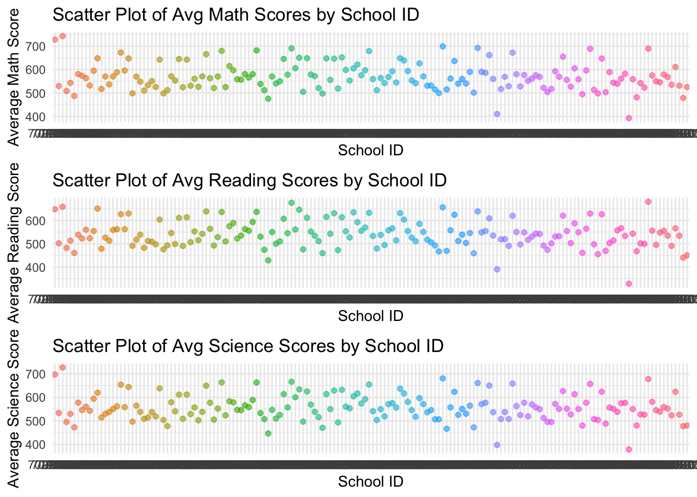
long_data <- stu_sch %>%
gather(key = "Subject", value = "Score", math_avg, reading_avg, science_avg) %>%
group_by(School_ID, Subject) %>%
summarise(AverageScore = mean(Score, na.rm = TRUE)) %>%
ungroup() %>%
mutate(Label = ifelse(AverageScore > 650 | AverageScore < 450, as.character(School_ID), ""))
# Create a dot plot to compare the average performance of different schools
ggplot(long_data, aes(x = School_ID, y = AverageScore, color = Subject)) +
geom_point(position = position_dodge(width = 0.5)) +
geom_text(aes(label = Label), check_overlap = TRUE, vjust = -1, position = position_dodge(width = 0.5)) +
theme_minimal() +
labs(title = "Comparison of School Performance in Subjects",
x = "School ID", y = "Average Score") +
scale_color_brewer(palette = "Set1") +
theme(axis.text.x = element_text(angle = 90, hjust = 1)) +
scale_x_discrete(breaks = NULL) 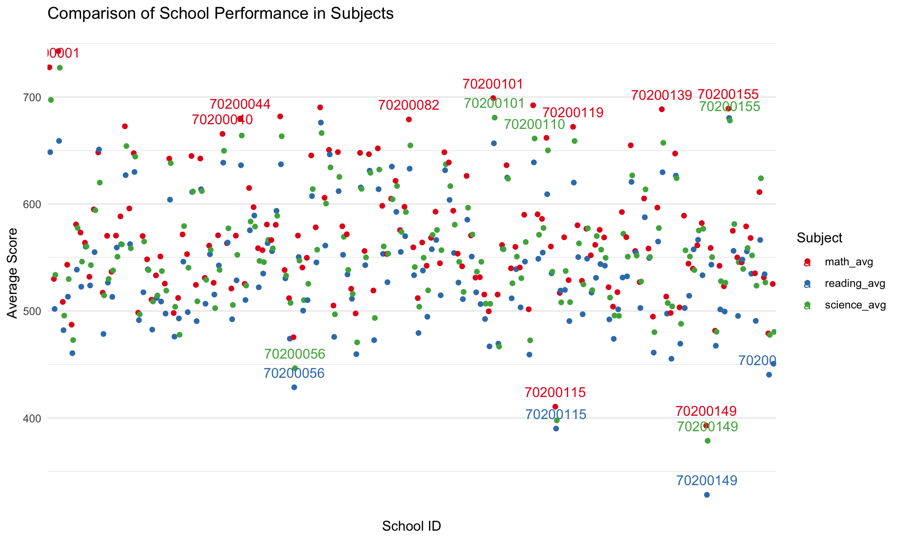
The scatter plot displays the average scores of all subjects for all schools within the same view, facilitating horizontal comparison and trend identification.
All data points are represented within a single coordinate system, making the information more centralized and space utilization more efficient.
The scatter plot provides a visual distinction through color coding, aiding in the quick identification of the distribution of different subjects.
This one explores variations in academic performance between male and female students, aiming to identify any notable differences in their scores across different subjects.
gender_math <- ggplot(data = stu_qqq_eda,
aes(x = Gender,
y = Math_Score)) +
geom_boxplot(color="grey50",
fill="#ADD0B3") +
geom_point(stat="summary",
fun.y="mean",
colour ="#137a63",
size=3) +
ylim(0,1000) +
labs(x = "", y = "Score", title = "Mathematics", axis.title.y = element_blank())
gender_read <- ggplot(data = stu_qqq_eda,
aes(x = Gender,
y = Reading_Score)) +
geom_boxplot(color="grey50",
fill="#ADD0B3") +
geom_point(stat="summary",
fun.y="mean",
colour ="#137a63",
size=3) +
ylim(0,1000) +
labs(x = "", title = "Reading") +
theme(axis.text.y = element_blank(), axis.title.y = element_blank())
gender_sci <- ggplot(data = stu_qqq_eda,
aes(x = Gender,
y = Science_Score)) +
geom_boxplot(color="grey50",
fill="#ADD0B3") +
geom_point(stat="summary",
fun.y="mean",
colour ="#137a63",
size=3) +
ylim(0,1000) +
labs(x = "", title = "Science") +
theme(axis.text.y = element_blank(), axis.title.y = element_blank())
gender_math + gender_read + gender_sci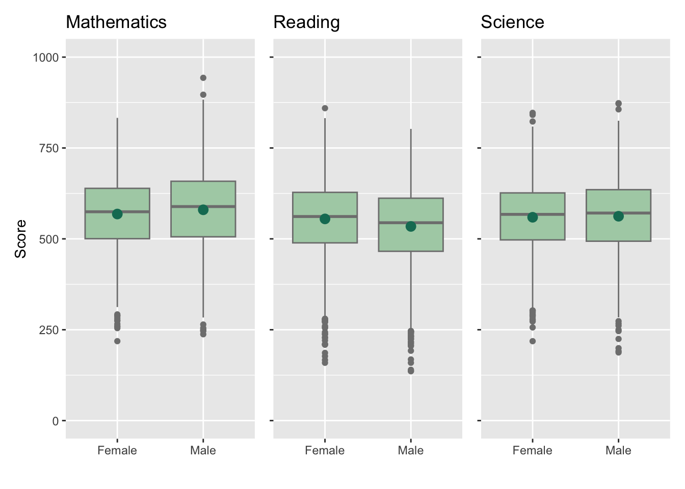
Clarity：
Data Overlap Issue: Here, using boxplots, individual points may overlap, making it difficult to distinguish between data points. Moreover, it does not clearly differentiate between the comparisons of males and females.
Lack of Data Density Information: Boxplots do not show the density of the data, that is, the concentration of data in different regions.
Aesthetics:
combined <- data.frame(
Avg_Math = stu_qqq_eda$Math_Score,
Avg_Reading = stu_qqq_eda$Reading_Score,
Avg_Science = stu_qqq_eda$Science_Score,
Gender = stu_qqq_eda$Gender
)
# Assuming 'combined' is your data frame with the scores and gender
combined$Gender <- factor(combined$Gender, levels = c("Female", "Male"), labels = c("Female", "Male"))
# Density plot for Math Scores
p1 <- ggplot(combined, aes(x = Avg_Math, fill = Gender)) +
geom_density(alpha = 0.5) +
ggtitle("Density Plot of Avg Math Scores by Gender") +
xlab("Average Math Score") +
ylab("Density") +
theme_minimal() +
scale_fill_manual(values = c("Female" = "#e69f9a", "Male" = "#7bc8ed"))
# Density plot for Reading Scores
p2 <- ggplot(combined, aes(x = Avg_Reading, fill = Gender)) +
geom_density(alpha = 0.5) +
ggtitle("Density Plot of Avg Reading Scores by Gender") +
xlab("Average Reading Score") +
ylab("Density") +
theme_minimal() +
scale_fill_manual(values = c("Female" = "#e69f9a", "Male" = "#7bc8ed"))
# Density plot for Science Scores
p3 <- ggplot(combined, aes(x = Avg_Science, fill = Gender)) +
geom_density(alpha = 0.5) +
ggtitle("Density Plot of Avg Science Scores by Gender") +
xlab("Average Science Score") +
ylab("Density") +
theme_minimal() +
scale_fill_manual(values = c("Female" = "#e69f9a", "Male" = "#7bc8ed"))
# Arrange the plots into one composite image
grid.arrange(p1, p2, p3, ncol = 1)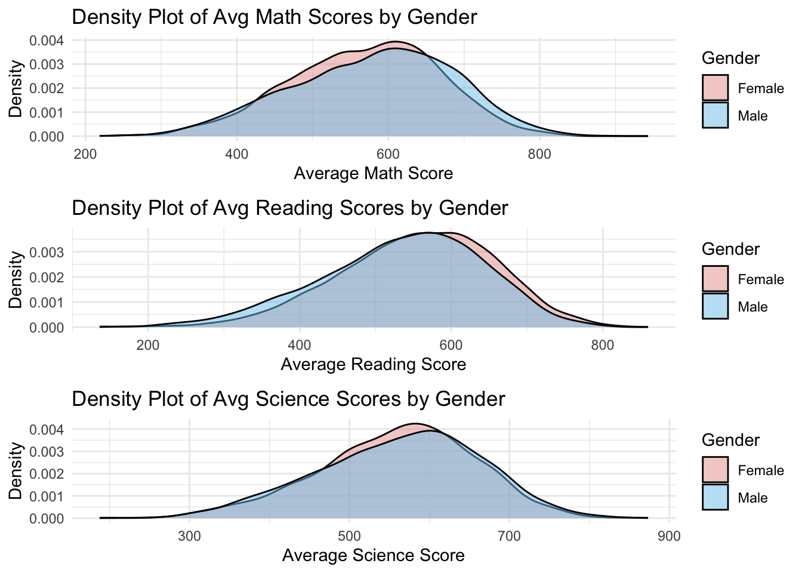
Visual Appeal: Density plots with different colors are usually more visually appealing. Data
Density Representation: Density plots provide a visual representation of data density, which helps in understanding the distribution of data across different areas.
Improved Understanding of Data Distribution: Density plots can better display the shape of data distribution, especially for skewed distributions.
The code below shows a brief summary of the dataset for socioeconomic status.
summary(stu_qqq_eda$Socioeconomic_Stat) Min. 1st Qu. Median Mean 3rd Qu. Max. NA's
-3.5488 -0.2327 0.4817 0.2904 0.9036 3.2780 47 Since there are results that show NA values, this is removed during data wrangling. The below code chunk shows the summary after the deletion of unnecessary data.
summary(stu_qqq_eda$Socioeconomic_Stat) Min. 1st Qu. Median Mean 3rd Qu. Max. NA's
-3.5488 -0.2327 0.4817 0.2904 0.9036 3.2780 47 The distribution of the socioeconomic standings can be seen from the histogram below.
ggplot(data = stu_qqq_socio,
aes(x = Socioeconomic_Stat)) +
geom_histogram(color = "grey50", fill = "#ADD0B3", bins = 30) +
geom_vline(aes(xintercept = mean(Socioeconomic_Stat)), color = "#137a63", linetype = "dashed", size = 1) +
labs(x = "Social Economic Standing", y = "Frequency", title = "Distribution of Socioeconomic Status") +
theme_minimal()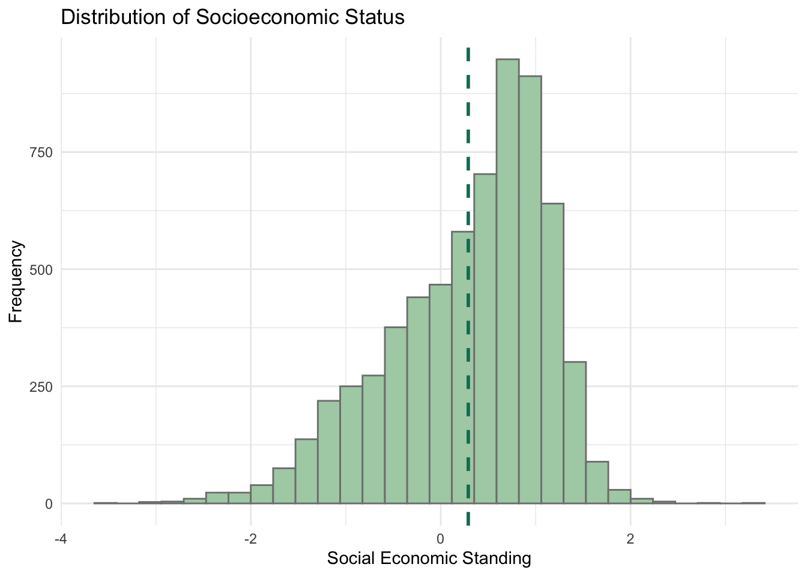
cor1 <- round(cor(stu_qqq_socio$Math_Score, stu_qqq_socio$Socioeconomic_Stat),2)
cor2 <- round(cor(stu_qqq_socio$Reading_Score, stu_qqq_socio$Socioeconomic_Stat),2)
cor3 <- round(cor(stu_qqq_socio$Science_Score, stu_qqq_socio$Socioeconomic_Stat),2)
p1 <- ggplot(data = stu_qqq_socio,
aes(y = Math_Score, x = Socioeconomic_Stat)) +
geom_point(size = 0.1, color = "#137a63") +
geom_smooth(method = lm, color = "black") +
annotate("text", x = -2, y = 800, label = paste0("r = ", cor1), color = 'black')
p2 <- ggplot(data = stu_qqq_socio,
aes(y = Reading_Score, x = Socioeconomic_Stat)) +
geom_point(size = 0.1, color = "#137a63")+
geom_smooth(method = lm, color = "black") +
annotate("text", x = -2, y = 800, label = paste0("r = ", cor2), color = 'black')
p3 <- ggplot(data = stu_qqq_socio,
aes(y = Science_Score, x = Socioeconomic_Stat)) +
geom_point(size = 0.1, color = "#137a63")+
geom_smooth(method = lm, color = "black") +
annotate("text", x = -2, y = 800, label = paste0("r = ", cor3), color = 'black')
p1/p2/p3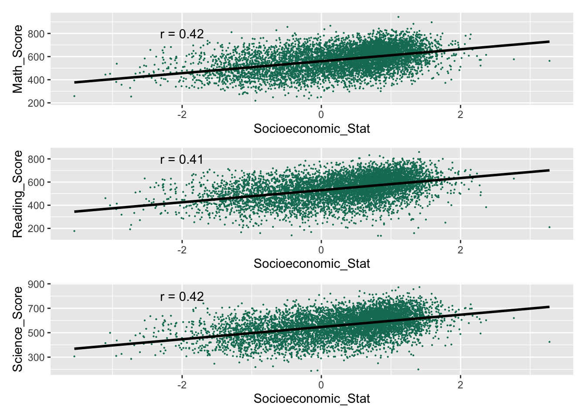
Clarity：
Aesthetics:
mean_value <- mean(stu_qqq_socio$Socioeconomic_Stat, na.rm = TRUE)
median_value <- median(stu_qqq_socio$Socioeconomic_Stat, na.rm = TRUE)
ggplot(data = stu_qqq_socio, aes(x = Socioeconomic_Stat)) +
geom_histogram(color = "grey50", fill = "#ADD0B3", bins = 30) +
geom_vline(xintercept = mean_value, color = "#137a63", linetype = "dashed", size = 1) +
geom_vline(xintercept = median_value, color = "blue", linetype = "dotted", size = 1) +
geom_text(aes(x = mean_value, y = 800, label = paste("Mean:", round(mean_value, 2))), color = "#137a63", vjust = -0.5, hjust = 1.5) +
geom_text(aes(x = median_value, y = 800, label = paste("Median:", round(median_value, 2))), color = "blue", vjust = -0.5, hjust = -0.5) +
labs(x = "Social Economic Standing", y = "Frequency", title = "Distribution of Socioeconomic Status") +
theme_minimal()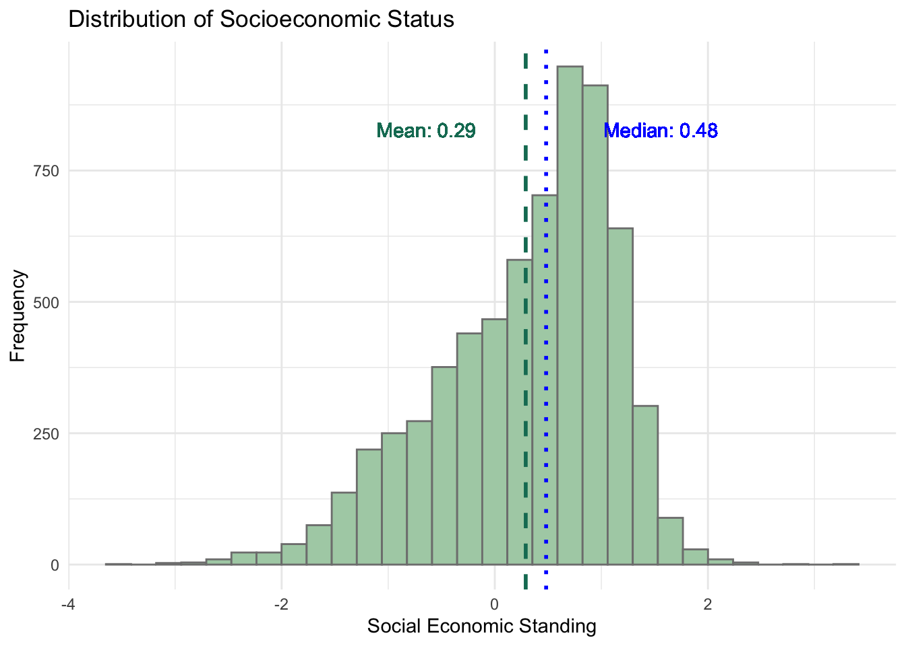
cor1 <- round(cor(stu_qqq_socio$Math_Score, stu_qqq_socio$Socioeconomic_Stat), 2)
cor2 <- round(cor(stu_qqq_socio$Reading_Score, stu_qqq_socio$Socioeconomic_Stat), 2)
cor3 <- round(cor(stu_qqq_socio$Science_Score, stu_qqq_socio$Socioeconomic_Stat), 2)
color_math <- "#89A0B0" # 淡蓝色
color_reading <- "#A0B089" # 淡绿色
color_science <- "#B089A0" # 淡紫色
p1 <- ggplot(data = stu_qqq_socio, aes(y = Math_Score, x = Socioeconomic_Stat)) +
geom_point(size = 0.1, color = color_math) +
geom_smooth(method = lm, color = "black") +
annotate("text", x = -2, y = 800, label = paste0("r = ", cor1), color = 'black') +
labs(title = "Math Score vs Socioeconomic Status")
p2 <- ggplot(data = stu_qqq_socio, aes(y = Reading_Score, x = Socioeconomic_Stat)) +
geom_point(size = 0.1, color = color_reading) +
geom_smooth(method = lm, color = "black") +
annotate("text", x = -2, y = 800, label = paste0("r = ", cor2), color = 'black') +
labs(title = "Reading Score vs Socioeconomic Status")
p3 <- ggplot(data = stu_qqq_socio, aes(y = Science_Score, x = Socioeconomic_Stat)) +
geom_point(size = 0.1, color = color_science) +
geom_smooth(method = lm, color = "black") +
annotate("text", x = -2, y = 800, label = paste0("r = ", cor3), color = 'black') +
labs(title = "Science Score vs Socioeconomic Status")
grid.arrange(p1, p2, p3, nrow = 3)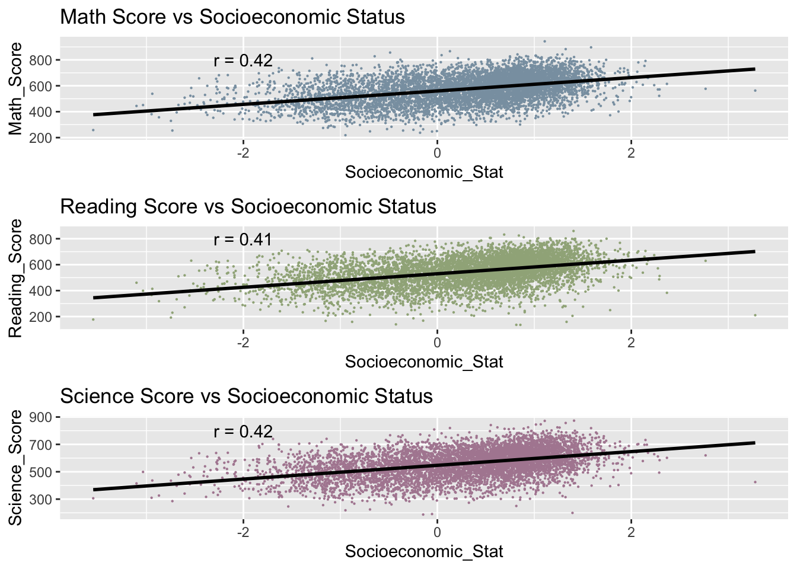
In the first chart, detailed annotations have been added, including the calculation of specific mean and median values.
In the second chart, three different colors were used to distinguish the three subjects, making it visually more appealing and clear.
color_math <- “#89A0B0”
color_reading <- “#A0B089”
color_science <- “#B089A0”
The take-home exercise 1 done by my classmates are all excellent. Optimizing my peers’ homework has allowed me to learn a lot. On one hand, it involves learning unfamiliar syntax, and on the other hand, it enables me to further apply ggplot2, ggplot2 extensions, and tidyverse packages flexibly.
In terms of clarity, we need to choose just the right type of graphic that ensures the statistical charts comprehensively and clearly convey all the information of the data. Moreover, it’s crucial to use efficient graphical expression to integrate and distill the key points of the information.
As for aesthetics, the matching of colors and the thickness of lines can affect the beauty of the image, which has trained my aesthetic skills. And it allows me to understand the data more deeply through the matching of colors.